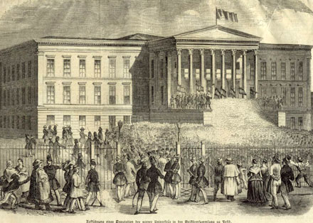

1848. március 15-én robbant ki Pesten a radikális ifjúság által vezetett forradalom, nyitányát adva Magyarország másfél éves szabadságküzdelmének.
Párizsból induló forradalmi hullám két nap alatt jutott el Bécsből a magyarság szellemi életének központjába, a pesti megmozdulás fő szervezői fiatal értelmiségiek (pl. Petőfi Sándor, Vasvári Pál, Jókai Mór) voltak.Petőfi naplója szerint a Pilvax kávéházban született meg a forradalom „akcióterve”: a szervezők először a tanuló ifjúságot szólították magukhoz az Egyetem téren, aztán lefoglalták Landerer Lajos nyomdáját. Innen került ki a követeléseiket összegző Tizenkét pont és Petőfi forradalmi hangvételű verse, a Nemzeti dal, mely írások máig szimbolizálják március 15-ét.
Röplapok segítségével délután 3 órára a Nemzeti Múzeum kertjébe gyűlést hirdettek, ahol állítólag tízezer polgár volt már jelen. Fontos megemlíteni, hogy a közhiedelemmel ellentétben Petőfi nem szavalta el versét a Nemzeti Múzeum lépcsőjén, bár az kétségkívül számos helyen elhangzott. A Múzeum-kertből a tömeg a Városházára, majd Budára, a Helytartótanácshoz vonult, hogy kiszabadítsa börtönéből Táncsics Mihályt. A Nemzeti Színházban este a nép kívánságára Katona József darabját, a Bánk bánt tűzték műsorra, ezt azonban valószínűleg félbeszakította a betóduló forradalmi tömeg. Más városokkal ellentétben Pesten nem próbálták fegyveres erővel feloszlatni a tüntetéseket, a forradalom vérontás nélkül zajlott.
A március 15-i eseményekre legnagyobb hatással Kossuth Lajos március 3-i országgyűlési beszéde bírt, melynek reformkövetelései, igaz, jóval radikálisabb formában, a Tizenkét pontban jelentek meg. A bécsi események csak bátorítást adtak a Pilvaxban naponta összegyűlő értelmiségi körnek, mely a kedvezőtlen időjárás ellenére eredménnyel szervezkedett (március 15-én vásárt is tartottak Pesten, ami hozzájárult a tüntetés sikeréhez). A pesti forradalom hatással volt a pozsonyi rendi országgyűlésre is, döntő győzelemre segítve a reformok pártján állókat.
V. Ferdinánd és a bécsi udvar a pesti eseményeket követően nem merte visszautasítani a beadott feliratot, kinevezte gróf Batthyány Lajost miniszterelnöknek, aki március 23-án megalakította az első felelős ministeriumot (kormányt). A pesti forradalomnak is köszönhető az áprilisi törvények megszületése (április 11.), amelyek eltörölték az elavult, rendiségen alapuló politikai rendszert és lehetőséget biztosítottak a polgári fejlődésre egy majdnem teljesen önálló Magyarország számára.
Március 15-ét joggal tartjuk legnagyobb nemzeti ünnepünknek, mely nap minden korban a magyar szabadság szimbóluma maradt.
Mit kiván a magyar nemzet. Legyen béke, szabadság és egyetértés.
Egyenlőség, szabadság, testvériség!